地政学
パリキールは小さな首都ですが、太平洋の広大な海域、米国との自由連合、四州の自治、日本と米軍統治の記憶を背負います。役所の低い建物から、漁業権、援助、移民、安全保障が動き、島ごとの声を調整する拠点にもなります。
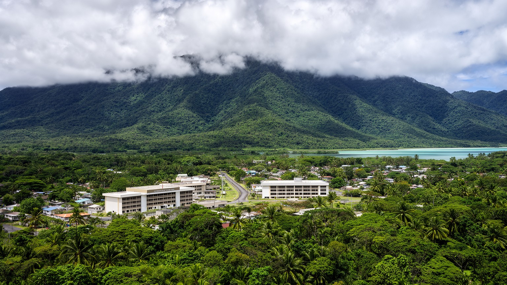
🇫🇲 ミクロネシア連邦 / ポンペイ州 / World City Atlas
ポンペイ島の山と雨林に囲まれた小さな連邦首都です。行政地区、大学、村落、教会、サカオの儀礼、礁湖、米国との自由連合、広い海域を持つ島嶼国家の政治が静かに重なります。
都市の骨格
パリキールは高層の中心市街ではなく、ポンペイ島内陸の行政キャンパスに近い首都です。小さな集落から、四州に散らばる島々、米国との自由連合、広大な排他的経済水域を扱う政治が動きます。
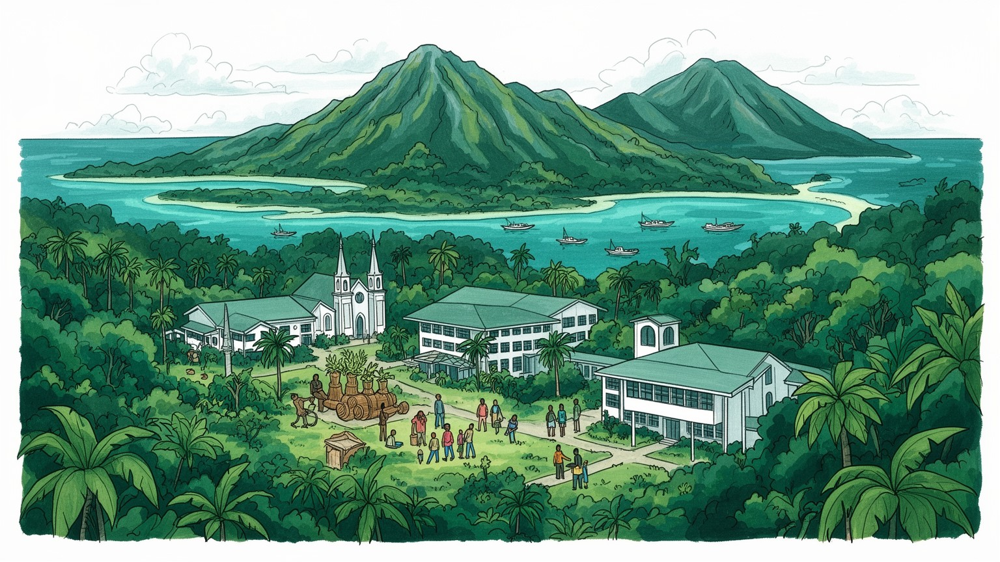
パリキールは小さな首都ですが、太平洋の広大な海域、米国との自由連合、四州の自治、日本と米軍統治の記憶を背負います。役所の低い建物から、漁業権、援助、移民、安全保障が動き、島ごとの声を調整する拠点にもなります。
連邦行政、大学、教育、建設、小売、農漁業、観光、米国関連の雇用と送金が生活を支えます。現金経済は小さいが、家族の土地、海の食料、海外で働く親族が暮らしを補い、若者の進路も左右する首都です。島の仕事は幅広いです。
ポンペイ語と英語、教会、首長制、サカオの儀礼、親族、村の行事が社会の信頼を作ります。首都機能は近代的ですが、土地と礼節、共同体の順序が政治と日常の背後で働き続ける重要な基盤でもあります。島の誇りも静かに守ります。
旅行者はナンマドール、滝、礁湖、ダイビングへ向かうが、住民は物価、輸入依存、車、学校、医療、台風と海面上昇に向き合います。静かな首都には島の現実が濃く出ります。日常の移動も重要な課題になる静かな場所でもあります。
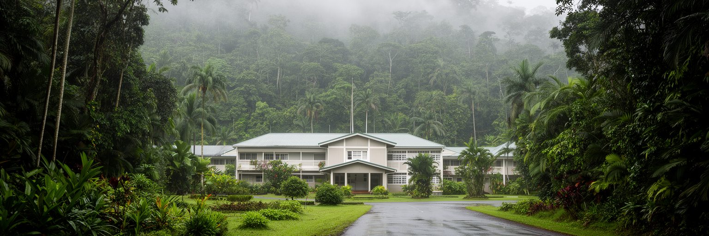
パリキールは、首都と聞いて想像される大通りや高層ビルの都市ではありません。ポンペイ島の北西側、山の湿った緑に囲まれた場所に連邦政府の中枢が置かれ、庁舎、会議施設、住宅、学校、村落の道が雨林の地形に沿って並びます。近くのコロニアが港、商店、州政府、病院、空港への入口として日常の中心を担うため、パリキールの役割は都市全体の商業中心というより国家行政の静かな核です。年間を通じて雨が多く、道路脇の排水、斜面、濃い植生、湿度が移動や建物維持を左右します。首都の小ささは弱さだけでなく、島嶼国家の統治の実感でもあります。議会や大統領府から少し離れれば、畑、教会、家族の土地、学校へ向かう車が見えます。国家は抽象的な建物ではなく、村の生活と同じ地形の上に置かれています。パリキールを読むには、庁舎の形よりも、雨林の中で行政、親族、土地、海への道がどう接続するかを見る必要があります。緑に囲まれた首都は穏やかに見えますが、遠い島々の声を集め、広い海域の決定を扱う重い場所でもあります。小さな行政地区の静けさの中に、国家の距離と太平洋の広さが同時に表れます。雨で濡れた芝生や木陰の道は、首都が自然を背景にしているだけでなく、自然条件そのものに組み込まれていることを示します。行政の時間も、島の雨、移動、共同体の予定と切り離せません。そこに独自性があります。
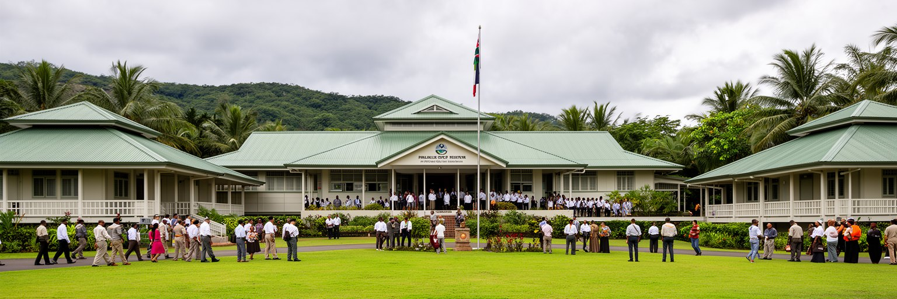
ミクロネシア連邦は、ヤップ、チューク、ポンペイ、コスラエの四州から成ります。島々は東西に長く散らばり、言語、首長制、航海文化、教会、土地制度、移動の習慣も一様ではありません。パリキールに置かれた連邦政府は、その違いを一つの国家として調整する場所です。大統領、議会、連邦省庁、外交窓口はここに集まりますが、州政府の権限も大きく、教育、保健、土地、日常行政は州と自治体の判断に深く関わります。小さな首都に政策が集中しても、実施の現場は離島の学校、診療所、港、滑走路、村の会議にあります。だから連邦政治の課題は、中央集権的な力を誇示することではなく、島ごとの距離と文化を尊重しながら、予算、奨学金、医療搬送、漁業管理、気候対策を公平に届けることです。パリキールの行政地区が低層で控えめに見えるのは、都市規模の小ささだけでなく、国家が共同体の合意に依存していることも映しています。首都で決まる文書が、チュークのラグーン、ヤップの外島、コスラエの村、ポンペイの山道へ届くまでには、飛行機、船、親族、通訳、信頼が必要になります。パリキールはその長い回路の始点です。連邦の会議では数字だけでなく、各島の距離感や慣習が交渉の前提になります。小さな首都が国家を保つには、中心が命令するより、離れた島々が納得できる手順を積み重ねる必要があるのです。
パリキールの政治を理解する鍵は、米国との自由連合にあります。ミクロネシア連邦は主権国家でありながら、安全保障や経済支援、移住、教育、保健、インフラ資金の多くで米国との関係に深く結びつきます。住民は一定の条件で米国へ移住し、働き、学び、家族へ送金できるため、首都の経済は国内の雇用だけでは完結しません。連邦政府にとって、自由連合の資金、信託基金、公共サービス、環境対策、医療紹介、奨学金は国家運営の土台です。同時に、太平洋の安全保障環境が変わるほど、この小さな首都の外交的な意味は大きくなります。中国、米国、日本、オーストラリア、台湾問題、太平洋諸国間の協力は、遠い大国政治ではなく、港、通信、空港、漁業、災害対応の条件として現れます。パリキールの外交は、巨大な大使館街の景観ではなく、会議室、援助プロジェクト、学校の奨学金、移住手続き、医療搬送の書類に宿ります。自由連合は機会を広げる一方、依存と人材流出も生みます。首都の役割は、外部支援を受けるだけでなく、島々の将来を自分たちの制度として交渉することにあります。小さな行政地区で交わされる合意は、太平洋の地政学と家庭の進路を同時に左右します。外交は首都の専門家だけの仕事ではありません。移住した親族、帰国する学生、建設資金、通信回線、災害時の支援が、家庭の会話の中で国際関係を具体的な経験に変えています。
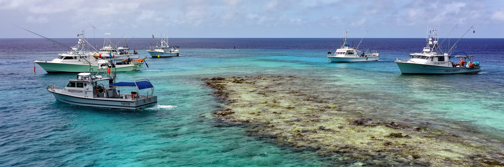
ミクロネシア連邦の陸地は小さいが、海は広いです。四州の島々は北太平洋に散らばり、排他的経済水域は国土面積をはるかに超えます。パリキールの政府は、漁業権、入漁料、海洋監視、港湾、環境保護、国際交渉を通じて、この広大な水域を国家収入と食料安全保障へ結びつけようとします。マグロ資源は特に重要で、外国漁船との協定や地域漁業機関での交渉は、小国の財政に大きな意味を持ちます。一方で、監視能力、違法漁業、気候変動による資源分布の変化、港湾施設の限界は重い課題です。住民の日常にとっても、海は現金収入だけでなく、食卓、親族行事、航海の記憶、子どもの遊び、村の境界です。パリキールが海から少し内陸にあることは、海洋国家の首都として逆説的に見えますが、実際には島の中心から海の管理を考える場所になっています。政策としての漁業と、暮らしとしての海を切り離すと、この国の経済は理解できません。入漁料が学校や道路に変わるか、海の資源が次世代へ残るかは、首都の小さな行政能力にかかっています。パリキールの重要性は、海に面した大港湾ではなく、広い海を公共の財産として扱う制度を作る点にあります。漁船の位置情報、監視艇、地域協定、港の氷や燃料といった実務は地味ですが、国家財政と海の持続性を支えます。海を守る能力は、首都の見えにくい産業政策でもある重要な柱です。
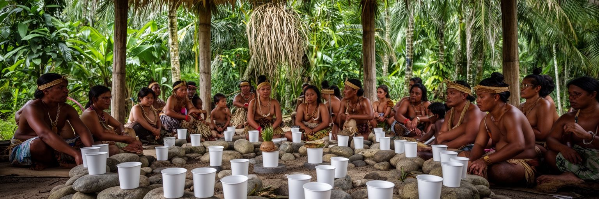
パリキールは近代国家の首都であると同時に、ポンペイの土地制度と首長制の世界の中にあります。土地は単なる不動産ではなく、家族、氏族、首長、村の記憶と結びつき、住む場所、畑、墓、儀礼、社会的な義務を支えます。ポンペイでは伝統的な称号や礼節が今も重要で、政治家や公務員も共同体の関係から完全に切り離されて動くわけではありません。サカオの儀礼、葬儀、結婚、教会の集まり、村の労働は、社会の信頼を作る場です。首都の庁舎が建ったことで土地と行政の関係は変化したが、近代的な権利書だけで都市の実態を説明することはできません。道路や施設の建設、学校用地、住宅、環境保全、観光開発は、誰の土地で、誰が決め、誰が利益を受けるのかという問いを伴います。パリキールを読むには、国会や省庁だけでなく、村の会合、親族の義務、首長への敬意、土地をめぐる慎重な交渉を見る必要があります。伝統は過去の飾りではなく、公共事業と生活の実務を左右する制度でもあります。首都が安定して機能するためには、国家法と地域の礼節が互いを無視せず、住民が納得できる形で調整されることが欠かせません。土地の合意が弱ければ、施設が完成しても利用や維持で摩擦が残ります。逆に共同体の手順が尊重されれば、小さな公共事業でも長く使われ、首都と村の関係を支える財産になります。その均衡が都市を落ち着かせます。
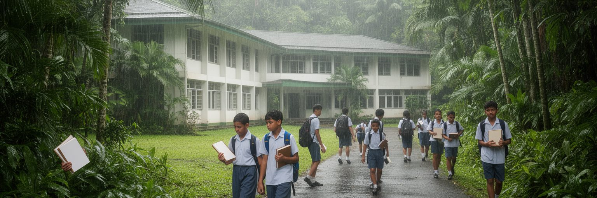
パリキール周辺には、連邦政府だけでなく教育機関の存在も目立ちます。小さな島嶼国家では、学校と大学は単なる地域施設ではなく、公務員、看護師、教師、会計、通信、観光、環境管理を担う人材を育てる国家基盤です。若者にとって教育は、島に残る道と海外へ出る道の両方を開きます。米国との自由連合によって移住や進学の選択肢は広がるが、優秀な人材が戻らない場合、首都の行政、病院、学校は人手不足に悩みます。家族は学費、寮、航空券、親族の支援を組み合わせ、子どもの進路を考えます。英語は行政と教育の鍵であり、ポンペイ語や各州の言語は家庭と共同体の根になります。パリキールの教育を読むには、教室だけでなく、海外からの送金、奨学金、インターネット、家庭の期待、帰郷するかどうかの悩みを見る必要があります。若者が島を出ることは喪失であると同時に、家計と知識を支える回路でもあります。課題は、外へ学びに行く力を閉じることではなく、戻りたい仕事、研究、公共サービス、起業の場を作ることにあります。小さな首都の未来は、行政施設の新しさよりも、若い世代が島で暮らす理由を見つけられるかにかかっています。学生が政府機関で実習し、環境調査や医療、観光、通信の仕事に触れられるなら、島で働く選択肢は具体的になります。教育は海外への出口であると同時に、首都を支える人材の入口でもあります。
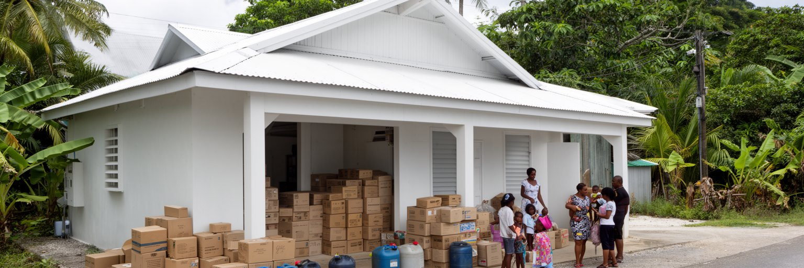
パリキールの暮らしは、雨林と海の豊かさに支えられながら、輸入品への依存にも強く左右されます。米、缶詰、燃料、建材、医薬品、車の部品、通信機器、学校用品の多くは船や飛行機で届き、港湾費、燃料価格、為替、輸送の遅れが店頭価格へ反映されます。自給的なタロイモ、パンノキ、バナナ、魚、豚、家庭菜園は食を支えますが、現金収入が必要な支出は増えています。公務員給与、海外で働く親族からの送金、小売や建設の仕事、観光収入は、輸入品を買う力として重要になります。小さな市場では競争が限られ、品切れや高値が家計を圧迫しやすいです。車社会でもあるため、燃料や修理費は通勤、通学、教会、病院への移動に直結します。パリキールを豊かな自然の中の静かな首都としてだけ見ると、生活費の高さを見落とします。島の暮らしは、現金を使わない助け合いと、外から来る商品への支払いが同時に必要な経済です。公共政策としては、港、道路、再生可能エネルギー、地元食材、輸送の信頼性を整えることが、家計の安定につながります。小さな首都の物価は、遠い海上輸送と家庭の食卓がどれほど近いかを示しています。輸入品の価格が上がると、家族は地元の作物を増やし、親族から分け合い、買う量を調整します。こうした柔軟さは生活の知恵ですが、医薬品や燃料の不足は助け合いだけでは補えない課題として残ります。
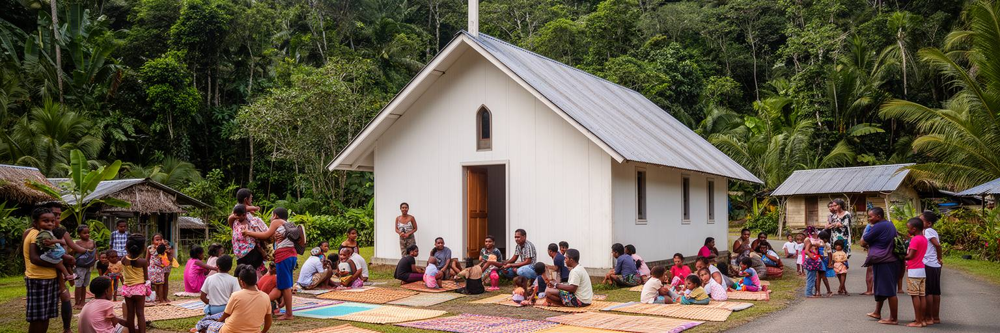
パリキール周辺の社会では、教会と親族が生活の基盤として大きな役割を持ちます。日曜礼拝、聖歌、葬儀、結婚、学校行事、共同作業は、家族を越えた助け合いを作ります。キリスト教はミクロネシア連邦の多くの地域で生活暦を形作り、教会は祈りだけでなく、教育、青年活動、災害時の連絡、地域の支援にも関わります。一方で、ポンペイの伝統的な礼節やサカオの儀礼も社会の秩序を支え、首長、年長者、親族の関係が日常の判断に影響します。近代的な首都行政は書類と法律で動くが、住民の信頼は挨拶、贈与、参列、共同労働、言葉遣いの積み重ねで保たれます。小さな社会では、評判や親族関係が仕事、政治、土地、教育に影響しやすく、それは支えにも圧力にもなります。パリキールを読むには、宗教施設を観光的な建物として見るのではなく、地域が危機を吸収する制度として理解する必要があります。台風、病気、葬儀費用、海外へ行く若者、帰郷する親族を支えるのは、公的制度だけではありません。教会と共同体は、国家が小さくサービスが限られる場所で、暮らしの安全網として働いています。首都の静けさは、こうした見えにくい関係の密度によって保たれています。共同体の強さは頼もしさである一方、若者や移住者には期待の重さとして感じられることもあります。支え合いが持続するには、伝統的な義務と個人の選択を両立させる余地が必要になります。
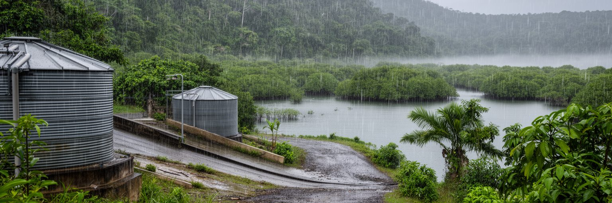
パリキールは世界でも雨の多い首都の一つとして語られることがあります。ポンペイ島の山は湿った空気を受け、深い雨林、滝、川、地下水、礁湖の生態系を育てます。水が豊かな印象の一方で、強い雨は斜面崩壊、道路の劣化、排水不良、濁水、建物の傷みを引き起こします。さらに、国全体では低い環礁や沿岸集落が海面上昇、高潮、塩水化、サンゴ礁の劣化にさらされます。パリキール自体は内陸寄りでも、首都が扱う気候課題は四州の島々に広がっています。水は恵みであり、同時にインフラと健康の問題です。雨水利用、浄水、排水、道路維持、避難、マングローブ保全、サンゴ礁の保護は、別々の政策ではなく一つの生活基盤です。気候変動は将来の抽象的な危機ではなく、井戸、畑、墓地、学校、港、飛行場をどう守るかという現在の課題になります。パリキールの行政は、国際会議で声を上げるだけでなく、村の排水路や離島の水タンクまで支える必要があります。雨林に囲まれた首都の湿った空気は、島国が水に守られ、水に脅かされる二重性を伝えています。気候政策の成否は、遠い会議場よりも、雨の日に通学路と水源が使えるかに表れます。排水路の清掃、斜面の植生保全、学校の避難計画、沿岸集落の移転相談は、どれも首都が支えるべき日常的な適応です。水を管理する力が、島の安全と尊厳を守る重要な基礎になります。
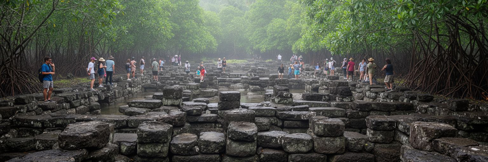
パリキールを訪れる旅は、ポンペイ島全体の歴史と切り離せません。島の南東側にあるナンマドールは、玄武岩の柱状石材と水路から成る壮大な遺跡で、ポンペイの政治、儀礼、労働動員、海との関係を物語ります。首都から見れば距離はありますが、国家の文化的な核として重要であり、ミクロネシア連邦が単なる近代行政国家ではなく、深い島の歴史を持つことを示します。遺跡の保存には、湿潤な気候、植生、高潮、資金、人材、土地関係、観光管理が関わります。観光客が増えることは収入の機会になりますが、無秩序な訪問や敬意を欠いた撮影は、地域の記憶を損ないます。パリキールの首都機能とナンマドールの遺産は、現代政治と古い権威の二つの時間を結びます。島の人々にとって歴史は展示物だけではなく、地名、首長制、儀礼、土地、語りの中に生きています。都市ガイドとしてのパリキールを読むなら、庁舎から遺跡へ向かう道の途中に、教会、学校、農地、川、マングローブが続くことにも注目したいです。世界遺産的な価値は、石造遺構の迫力だけでなく、それを支える地域社会の記憶と管理にあります。首都が文化を守るとは、観光商品を作るだけでなく、島の人が自分の歴史を語り続けられる条件を整えることでもあります。ガイドの育成、歩道の管理、儀礼への配慮、入場収入の地域還元がそろって初めて、遺産は外から見る名所ではなく、島の未来を支える共有財産になります。
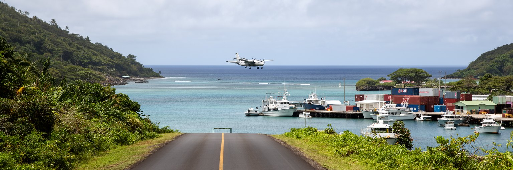
パリキールの交通は、ポンペイ島内の道路だけで完結しません。近くのコロニア方面には港、商店、病院、空港があり、首都の職員や学生、住民は車で移動します。ですが国家として見れば、距離は海と空路で測られます。ヤップ、チューク、コスラエ、外島へ行くには便数、天候、費用、貨物容量が制約になり、書類一つ、医療搬送一件、奨学金の移動、家族の葬儀にも大きな負担がかかります。船便が遅れれば建材や食料が遅れ、航空券が高ければ行政参加や進学の機会も狭まります。太平洋の島嶼国家では、交通は単なる利便性ではなく、国家の公平性そのものです。パリキールの行政が四州を代表するには、実際に人と物が動ける仕組みが必要になります。通信が発達しても、医師、教師、技術者、選挙関係者、部品、薬は移動しなければなりません。道路の舗装、港の保守、滑走路、燃料、海上安全、天候情報は、都市計画と外交と財政を結びつけます。小さな首都が抱える大きな課題は、離れた島々を一つの国家として感じられる距離に保つことです。パリキールから見える道路の静けさの背後には、太平洋を渡る長い移動のコストが隠れています。交通が不安定だと、会議への出席や選挙、医療、物流に偏りが生まれます。定期便と港の信頼性は、民主主義と生活サービスを同じ線で支えています。移動の保障は小国の統合を支える公共財です。
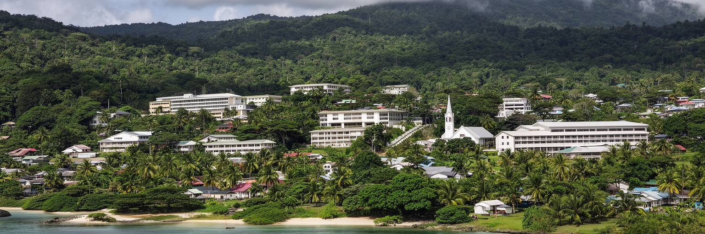
パリキールの重要性は、人口や都市規模だけでは測れないです。ここは小さな行政地区でありながら、四州の自治、米国との自由連合、広大な海域、漁業権、気候危機、教育、移住、伝統的な土地制度を一つの国家として扱う場所です。高層ビルや巨大市場がないからこそ、首都機能と村の生活の距離は近いです。政府庁舎、大学、教会、サカオの儀礼、家族の土地、雨林の道、コロニアの港、ナンマドールの記憶は、互いに別の世界ではなく、同じ島の中でつながっています。パリキールを読む時、静かな南国の首都として消費すると、物価、移住、人材不足、気候危機、海洋管理の重さが見えません。反対に、援助や安全保障の文脈だけで見ると、住民が土地、信仰、親族、海との関係の中で暮らしを組み立てる力を見落とします。大切なのは、小さな庁舎から広い太平洋を想像すること、そして広い海の政治が家庭の教育費や輸入品の値段に戻ってくることを理解することです。パリキールは世界都市の典型ではありませんが、島嶼国家が二十一世紀に直面する課題を濃く映す首都です。雨林の中の静かな道は、国家の脆さとしなやかさを同時に示しています。都市の価値は規模の大きさではなく、離れた島々の声を制度へ変える能力にあります。パリキールは、その能力が日々試される小さな実験場として読むべき首都であると言える場所です。